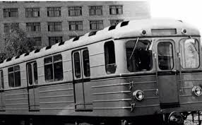
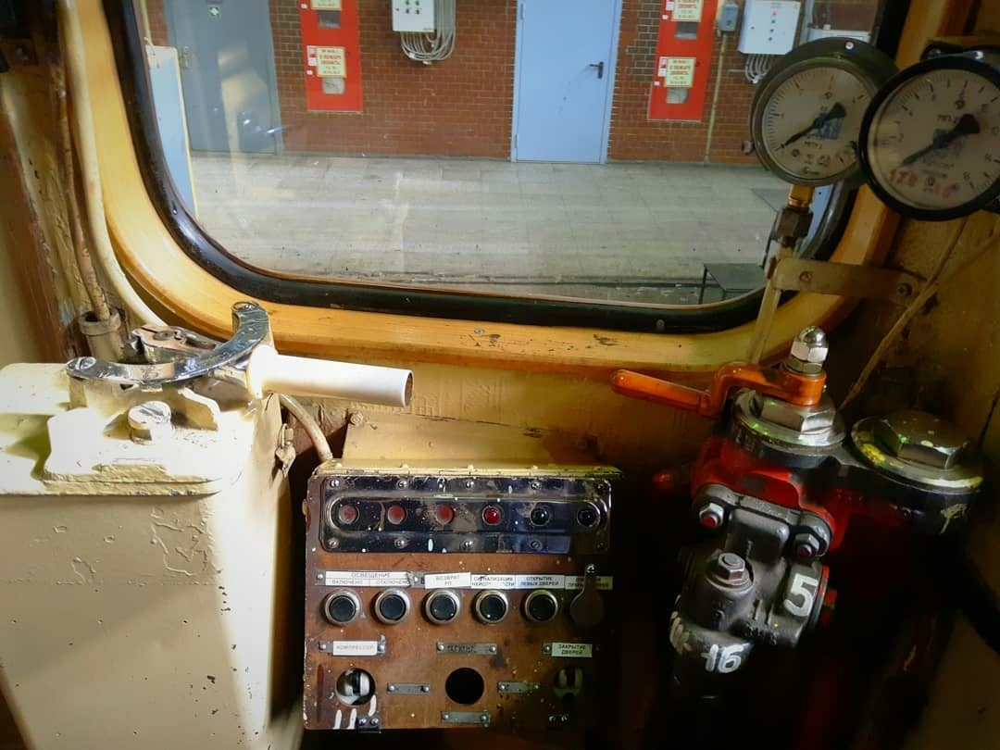
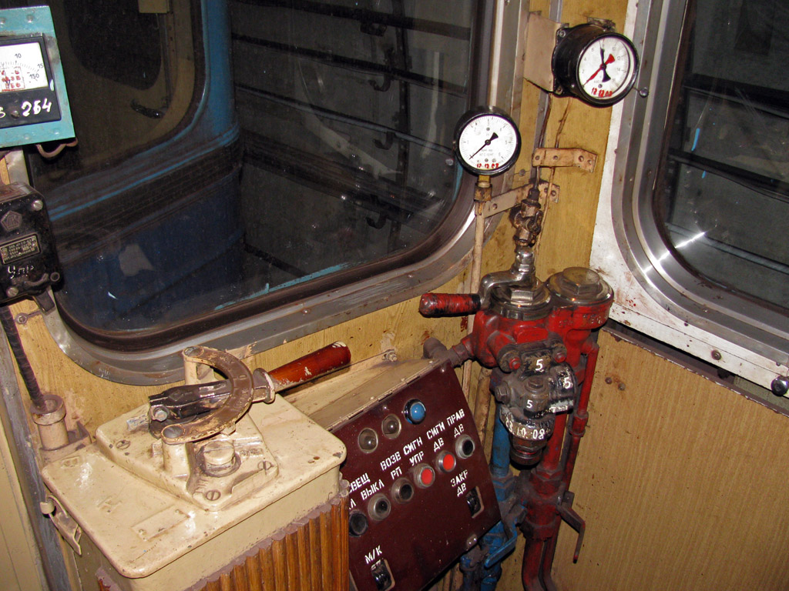
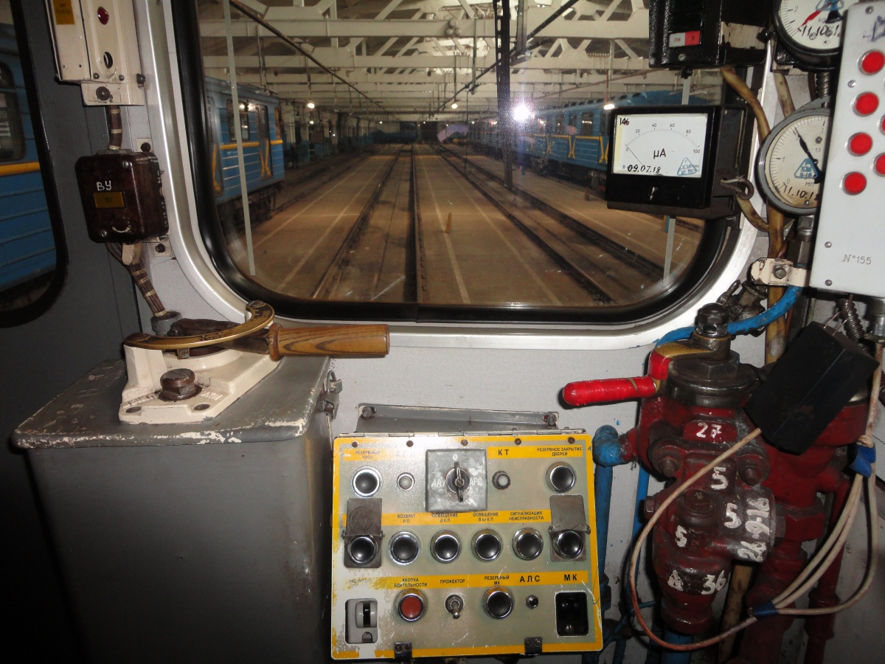
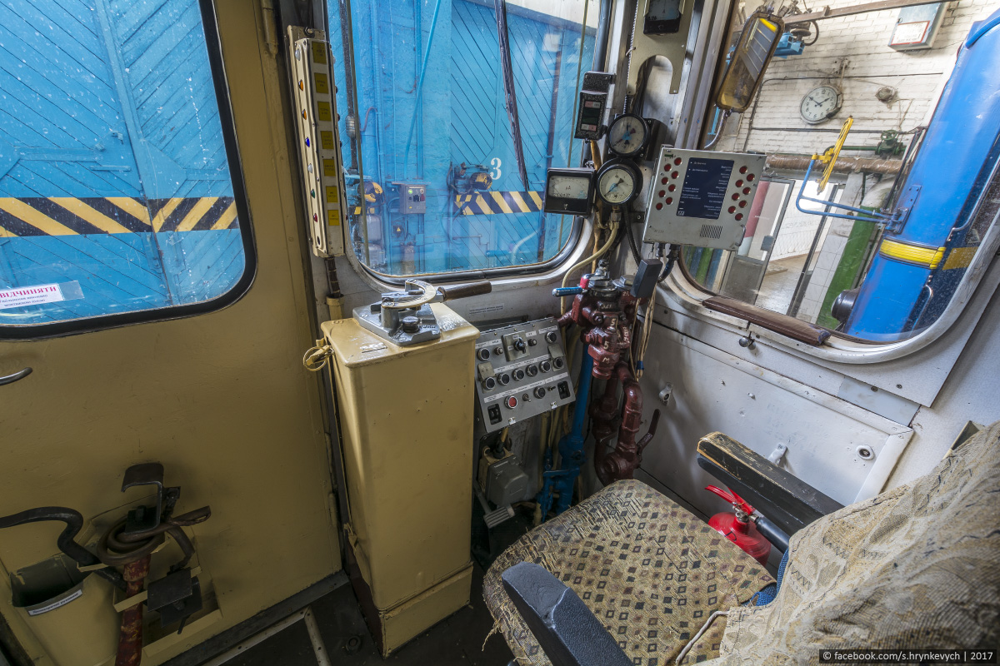
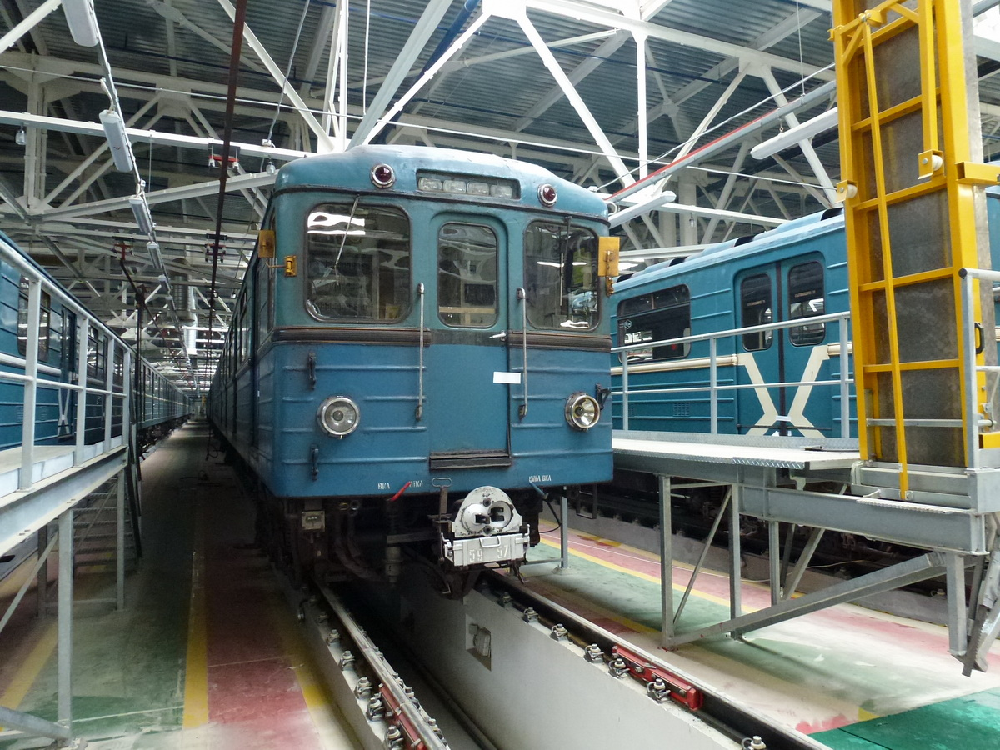
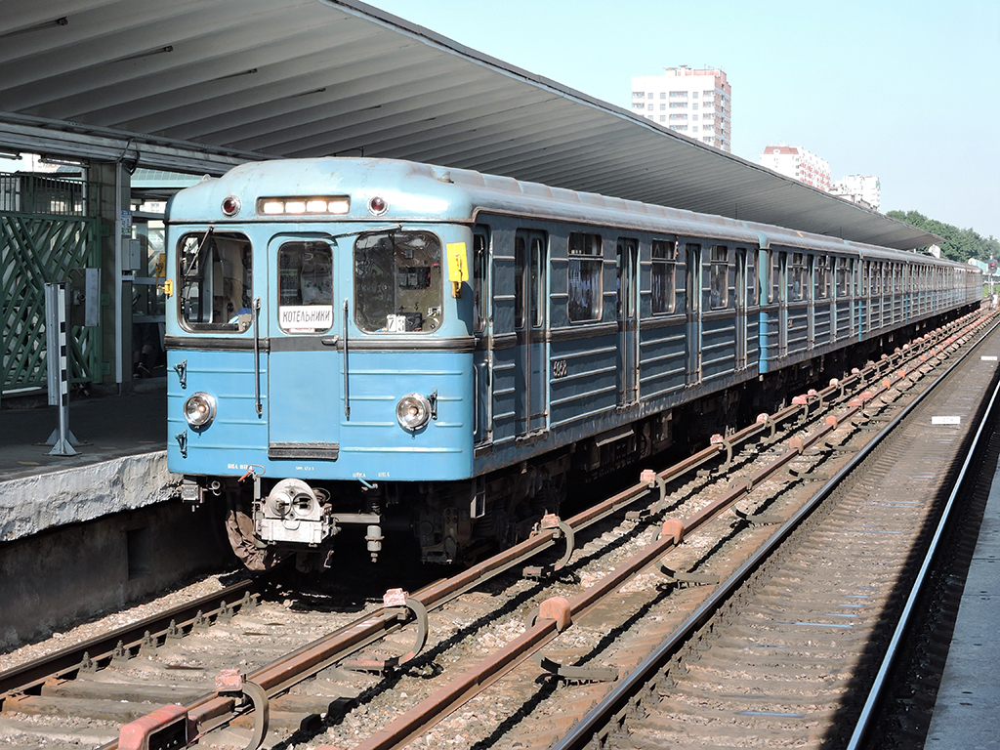

За всё время своей пассажирской эксплуатации, работал на Кировско-Выборгской Линии. В 2004 году был передан в электродепо ТЧ-4 «Северное», а в 2008 году был вновь возвращён в ТЧ-1, но уже для служебной эксплуатации, не связанной с перевозкой пассажиров.
До недавнего времени, вагон так и работал, находился в сцепе состава-дефектоскопа, для его сопровождения. Однако, 26 марта, данный вагон прибыл в ремонтный цех электродепо "Автово", на списание.



